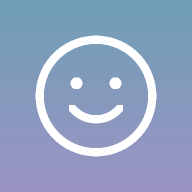

Welcome to NeuroSmile
A gentle companion for your Bell’s palsy recovery.
Each day you’ll take a quick 1-minute check-in. The app compares how the two sides of your face move and shows you every bit of progress — even the small steps.
For most people, Bell’s palsy is temporary. Tracking it helps you see the healing as it happens.
🔒 Your photos never leave this phone. No account, no uploads.
Why a quick setup first?
Accurate tracking needs a starting point. Your start date and baseline photos give every future check-in something to compare against — that’s how NeuroSmile can spot even the smallest improvement and show you how far you’ve come.
Takes about 2 minutes · 3 steps
When did it start?
Knowing your start date lets us track your progress against a typical recovery timeline and show which day you’re on. A best guess is perfectly fine.
You can change this any time in Settings.
Not sure of the exact day? Pick the closest date you remember.
Your baseline photos
This is the last setup step. Your baseline is the starting point every future check-in is measured against, so the more natural it is, the more accurate your progress will be.
You’ll be guided through four simple expressions:
- 😐 A relaxed face
- 😁 A big smile
- 😮 Raised eyebrows
- 😌 Eyes gently closed
For the best baseline: face a window or soft light, hold the phone at eye level about an arm’s length away, and go easy — never strain.
However your face looks today is perfectly okay. This is simply where your journey begins.
NeuroSmile
Every check-in is a step forward
Latest symmetry score
This app is a personal tracking aid, not a medical device or diagnosis. Follow your doctor’s advice. Seek urgent care for sudden weakness in an arm or leg, trouble speaking, or a severe headache.
How did you sleep?
How much sleep did you get last night? Rest plays a big part in healing, and tiredness can affect how your face moves.
Hours of sleep
Let’s relax first
Three slow breaths help your face muscles settle, so your photos show your true resting face. Recommended for the most accurate tracking.
About 35 seconds · 3 breaths
Let your jaw drop slightly, your cheeks soften, and your forehead go smooth.
Check-in complete
Overall symmetry
By movement
Your progress
Overall symmetry over time
Tap a point to see that day. Higher is more symmetric.
First check-in vs. latest (smile)
No check-ins yet. Your first one becomes your baseline.
Sleep the night before
Your note
Take a calm minute
Breathe in for 4, hold for 2, out for 6. Let your jaw and cheeks soften.
Gentle face exercises
These unlock once your face starts to improve.
Gentle exercises help most once movement begins to return. Until then, rest, eye care and your daily check-ins are the best things you can do.
Before you start
Recommended for you
All exercises
General guidance only, not a treatment plan. A facial physiotherapist can tailor exercises to your recovery.
Settings
Appearance
Auto matches your phone’s light/dark setting.
Used to show “Day N of recovery”. Stays on this phone.
Daily reminder
Creates a repeating calendar event on your phone. Same time each day keeps lighting consistent.
Your data
Privacy & how it works
Your photos never leave your phone
Face analysis runs entirely on this device. Photos and scores are saved in this app’s private storage on your phone only. Nothing is uploaded, and there is no account.
The only download is the face-analysis model itself, fetched once and then cached so the app works offline.
How the score works
Each check-in asks for four expressions. For each one, the app finds 478 points on your face and compares how far your left and right side move. If your weaker side moves 70% as much as your stronger side, that movement scores about 70.
The overall score blends: relaxed face 20%, smile 35%, eyebrow raise 20%, eye closing 25%. 100 means both sides look and move the same.
Tips for steady numbers
- Check in at the same time and place each day.
- Face a window or soft light — avoid strong light from one side.
- Hold the phone at eye level, arm’s length away.
- Expect a few points of day-to-day wobble. Watch the trend.
Look after your eye
Not medical advice
This is a personal tracking aid, not a diagnostic tool. Share your progress with your doctor, and contact them if things get worse or you notice new symptoms.